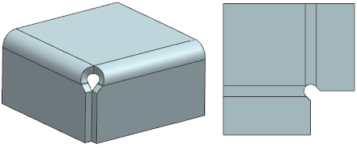
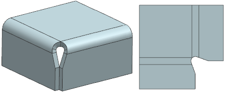

You can now create contour flanges that have the following additional bend treatment options at corners:
U-shaped

V-shaped

|
Note |
The origin of the Closed Corner embedded in a Contour Flange is at the center of the bend. If you want to specify the origin at the corner of the bend, you have to explicitly create the Closed Corner. |
|
Application |
NX Sheet Metal |
|
Toolbar |
NX Sheet Metal→Bend Drop–down list→Contour Flange |
|
Menu |
Insert→Bend→Contour Flange |
|
Location in dialog box |
Corner group→Bend Treatment list→U Cutout or V Cutout |